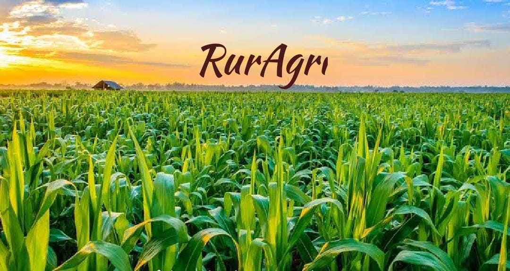
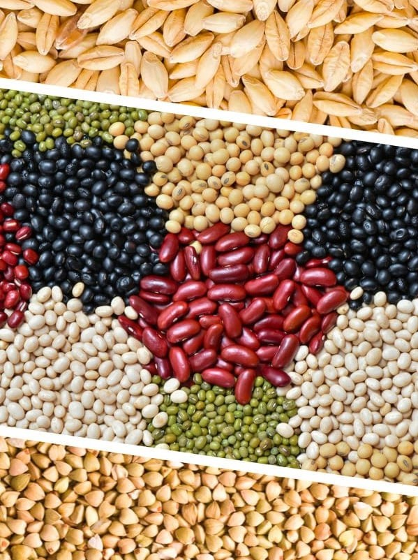
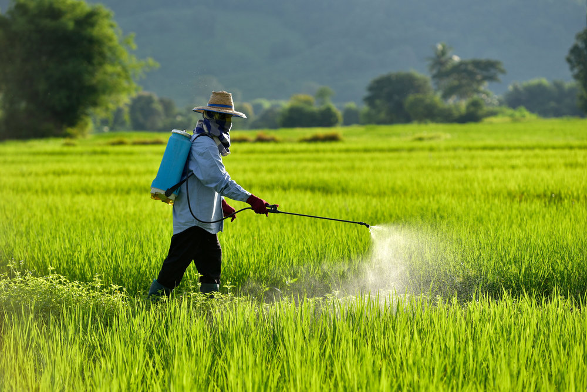
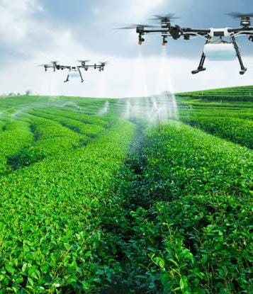

Agriculture is the practice of cultivating plants and livestock. It was the key development in the rise of sedentary human civilization, whereby farming of domesticated species created food surpluses that enabled people to live in cities.
Agriculture is backbone of Indian economy. India ranks second worldwide in farm outputs. India ranks first in the world with highest net cropped area followed by US and China. Development in rural areas, up to a large extent depends on Agriculture, as it constitutes the prime source of livelihood and food for farmers and other villagers. But, the statement also hold true, the other way round, that is agricultural in a village also depends hugely on the infrastructure developments and scientific advancements in farming. Approximately 45% of World’s population lives in rural areas, that is in terms of numbers around 3.4 billion people. Also, nearly 2 billion people have agriculture as their primary source of income. Agriculture sector also employs nearly 866 million people across the globe. Out of which, approx 75% (656 million) are in south-East Asia and Sub-Saharan Africa. Around 80% of world food is produced by over 500 million farms run by a family. Many crops are grown in varies parts of India like rice, wheat, ragi, maize, coffee, tea, mango, orange, rubber, cotton, pepper, etc. Here we give a brief note on some crops, condition required for their growth, protection from diseases. Smart farming is emerging industry in india. We have given brief note on this.


